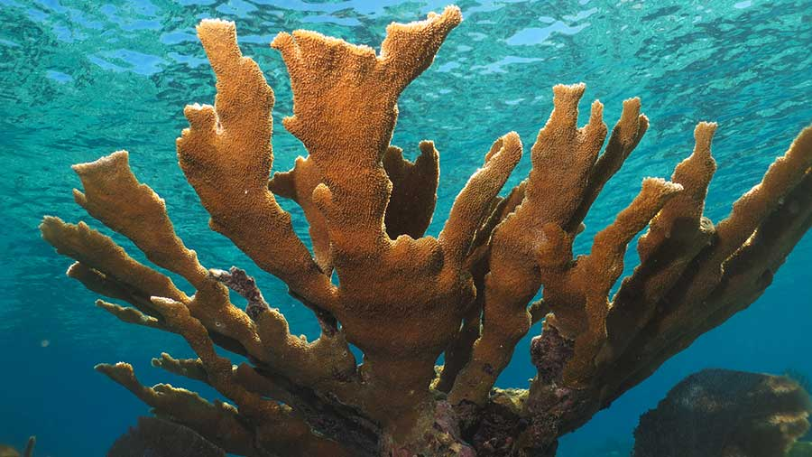

Elkhorn coral (Acropora palmata) is a large, fast-growing species of coral found in shallow, tropical waters of the Caribbean Sea and the western Atlantic Ocean. Known for its branching structure resembling elk antlers, this coral provides essential habitat for marine life, supporting biodiversity in reef ecosystems. Elkhorn coral thrives in clear, warm waters at depths of 1-5 meters (3-16 feet) and plays a critical role in protecting coastlines by reducing wave energy. Despite its ecological importance, elkhorn coral populations have declined dramatically due to threats like climate change, coral bleaching, disease, overfishing, and physical damage from storms and human activity. Conservation efforts, including reef restoration and marine protected areas, are essential for preserving this vital species.
ELKHORN CORAL
